Next: Validate
Up: Prediction
Previous: Prediction
Contents
After the prediction stage, we have a predicted PSTH and an original PSTH
from the actual neuron response. The Display Predicted PSTHs window provides a graphical display of these results.
Figure 3.17 shows predicted results for the auditory example at
with a Tol Value of 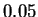. The predicted results for the visual example are
shown in Figure 3.18.
>From the figures, we can see that the top left panel in the window
shows the input stimulus used
for prediction. If the spatial domain of the input stimulus is 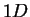,
the 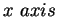 is time in 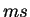 and the 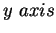 the spatial domain (e.g. frequency in 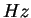 for auditory spectrograms).
If the spatial domain of the input stimulus is  ,
it only shows first 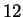 video frames in the current version
of STRFPAK.
The bottom left panel shows the predicted PSTHs together with
the raw neuronal responses.
You can easily see the goodness of fit from this plot.
The right panel of the window displays information and options.
The first text box shows the tolerance value used for the left plots.
You can see
plots based of STRFs at other tolerance values by clicking the
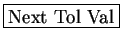 and
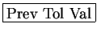 buttons.
The associated file names of stimulus and
response used for the plots in the left panel
are shown in the pred stim file field and the pred resp file field.
If more than one stimulus-response file is used for the prediction,
different files
can be displayed by pressing the
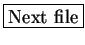 and
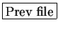 buttons.
,
it only shows first 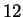 video frames in the current version
of STRFPAK.
The bottom left panel shows the predicted PSTHs together with
the raw neuronal responses.
You can easily see the goodness of fit from this plot.
The right panel of the window displays information and options.
The first text box shows the tolerance value used for the left plots.
You can see
plots based of STRFs at other tolerance values by clicking the
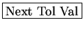 and
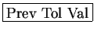 buttons.
The associated file names of stimulus and
response used for the plots in the left panel
are shown in the pred stim file field and the pred resp file field.
If more than one stimulus-response file is used for the prediction,
different files
can be displayed by pressing the
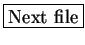 and
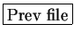 buttons.
 and 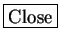 buttons are provided in the
bottom right position of the window.
The Smooth_window field shows the value used for smoothing
the raw neuronal psth, which can be changed at any time.
and 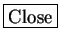 buttons are provided in the
bottom right position of the window.
The Smooth_window field shows the value used for smoothing
the raw neuronal psth, which can be changed at any time.
Figure 3.17:
Display prediction results for the auditory example
|
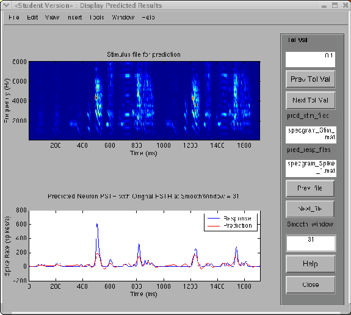 |
Figure 3.18:
Display prediction results for the visual example
|
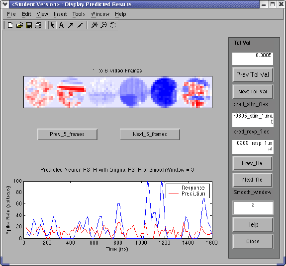 |
Next: Validate
Up: Prediction
Previous: Prediction
Contents
2004-08-09